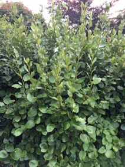
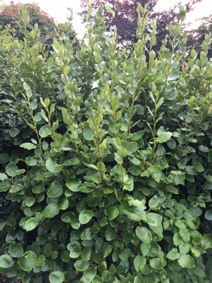
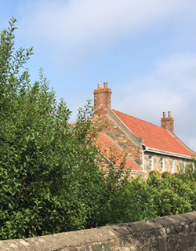

Allergy Trapping Hedges
One of the best things you can do to protect yourself as well as your family from allergenic pollen is to plant an allergy-free hedge. The most important thing about a protective hedge is that it should be made up of plants with a low OPALS-ranking. By planting it on the windward side of your property it will trap a great deal of incoming pollen, act as a wind block and stop mold spores, dust, and other allergenic particulates from coming into your yard.
The following plants are good choices for hedges. They are all female plants and rated with an OPALS-ranking of #1 making them allergy-free.
All three of these hedges have been sourced, propagated and grown by Nigel Clarkeon on the Isle of Guernsey in the Channel Islands and are available now at the Queux Plant Center, Isle of Guernsey.
Coprosma 'Big Glossy Girl'
Coprosma 'Big Glossy Girl' is a fast-growing and attractive evergreen shrub or small tree with shiny leaves. It needs full sun and grows best in Zone 10 and does well near the ocean.
If planted on 3-foot centers, the plants will quickly make a thick, glossy green hedge. A 'Big Glossy Girl' hedge can be sheared and kept to almost any size, but it easily held to 8 to 10 feet tall and 3 to 4 feet wide. 'Big Glossy Girl' is also beautiful as a stand alone shrub.


 

Griselinia littoralis ‘Green Girl’
Griselinia littoralis 'Green Girl is a female plant that has all-green leaves and grows fairly quickly. 'Green Girl' is an evergreen shrub that is popular in California and Europe. It grows best in Zones 9 and 10.
'Green Girl' has a winter hardiness and may grow better in hotter inland as well as coastal locations. It is very drought-tolerant once it is well established and is insect and disease free.
Pittosporum tenuifolium ‘Tall Girl’
Pittosporum tenuifolium 'Tall Girl' is a fast-growing, pollen-free female selection that will quickly get to 12 feet tall if given adequate water when young. The plant is used as common landscape plants in Zones 9 and 10.
'Tall Girl' is fairly drought tolerant once it is established and not fussy about the soil. It grows well in either sun or shade but tends to legginess when grown in deep shade. When planted on 3-foot centers, 'Tall Girl' will make an attractive protective hedge of glossy-leafed evergreen that requires little care. Stems of the new wood are almost black in color.

Guernsey Girl
Laurus nobilis ‘Guernsey Girl’ is an extra-choice, pollen-free selection, with the best OPALS® rating of #1. It is a popular evergreen shrub or small to medium-sized tree. ‘Guernsey Girl’ is suitable as a high-light indoor plant, is great for outside containers, or for growing in the ground. Bright green foliage and a tight growing pattern makes for solid hedges and can create stunning formal shapes to frame an entrance. It looks perfect on a patio.
Guernsey Girl’ has been developed by Nigel Clarke on the Isle of Guernsey in the Channel Islands, is Native to the UK, and can be found at the Queux Plant Centre, Isle of Guernsey.
Characteristics
- Allergy-free; child and pet safe; drought-tolerant; easy to grow; can be used in shade or full sun.
- Pollinator-friendly: Has nectar-rich flowers that attract many beneficial pollinators.
- Tolerant of pruning and shearing: can be trimmed into almost any shape. Pruned correctly, it can be well used as an allergy-free Christmas Tree.
- Pollen production: Produces no pollen and it traps pollen from other plants.
- Uses: Its leaves can be used fresh or dried and are used in cooking to give a fragrant flavor to soups, stews and other savory dishes.
Note: Asexual propagation without permission is not allowed.